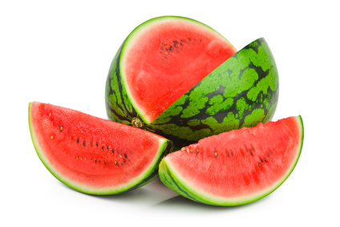

Watermelon (Citrullus lanatus)

Mating & Breeding System: Most watermelon varieties bear both male and female flowers, although a few have male and hermaphrodite flowers. Individual plants are self-fertile, but require a pollinator to bring about pollination, even within a hermaphrodite flower. Seedless watermelon varieties are triploid and produce inviable pollen. They must be interplanted with a diploid pollenizer variety, because successful fruit set requires viable pollen .
Pollination, Quality & Yield: There is a strong correlation between the weight of a mature watermelon and both the number and weight of mature seeds present in the fruit. Seedless watermelon require an even more pollinator visits to set marketable fruit, because pollen must be carried from a pollenizer variety further away. Experiments have shown that adding honey bees can increase melon weight and/or number of melons per plot. It has also been found that bumble bee visits produce higher seed set per visit than do honey bees
It is likely that wild pollinators can pollinate commercial watermelon fields. If they are lacking, though, then honey bees or bumble bees must be added. Yield is better near the margins of large fields than in the centre, suggesting that wild pollinators nesting in these habitats play an important role . Growers could improve pollination and reduce costs by encouraging wild pollinators in and around their fields (i.e., reduced mowing, judicious use of pesticides, conserving marginal areas and hedgerows), in addition to using managed pollinators.
Pollination Recommendations: Honey bees remain the pollinator of choice for watermelon, readily providing the large numbers of visits required to set high quality fruit. In larger fields at least, addition of honey bees should be added to improve pollination at a rate of 1-2.5 strong colonies per hectare. Shade and water should be provided for the bees on hot days. Managed bumble bees and the hoary squash bee (Peponapis pruinosa) have also been shown to be highly effective pollinators of watermelon. Further investigation of their effectiveness in commercial watermelon production, together with that of other wild solitary bees, is warranted.
References
Bodnar, J. 1987. Pollination of vine crops. OMAFRA FactSheet 87-043.
Brewer, J.W. 1974. Pollination requirements for watermelon seed production. Journal of Apicultural Research 13:207-212.
Dittmar, P.J., Monks, D.W., & Schultheis, J.R. 2009. Maximum potential vegetative and floral production and fruit characteristics of watermelon pollenizers. HortScience 44:59-63.
Dittmar, P.J., Monks, D.W., & Schultheis, J.R. 2010. Use of commercially available pollenizers for optimizing triploid watermelon production. HortScience 45:541-545.
Goff, C.G. 1937. Importance of bees in the production of watermelons. Florida Entomologist 20:30-31.
Julier, H.E. & Roulston, T.H. 2009. Wild bee abundance and pollination service in cultivated pumpkins: farm management, nesting behavior and landscape effects. Journal of Economic Entomology 102:563-573.
Kevan, P.G. 1988. Pollination, crops and bees. OMAFRA publication 72.
Rao, G.M. & Suryanarayana, M.C. 1988. Studies on pollination of watermelon Citrullus lanatus (Thunb.) Manst. Indian Bee Journal 50:5-8.
Shuler, R.E., Roulston, T.H., & Farris, G.E. 2005. Farming practices influence wild pollinator populations on squash and pumpkin. Journal of Economic Entomology 98:790-795.
Spangler, H.G. & Moffett, J.O. 1979. Pollination of melons in greenhouses. Gleanings in Bee Culture 107:17-18.
Stanghellini, M.S., Ambrose, J.T., & Schultheis, J.R. 1998. Seed production in watermelon: comparison between two commercially available pollinators. HortScience 33:28-30.
Stanghellini, M.S., Ambrose, J.T., & Schultheis, J.R. 2002. Diurnal activity, floral visitation, and pollen deposition by honey bees and bumble bees in field-grown cucumber and watermelon. Journal of Apicultural Research 41:27-34.
Walters, S.A. 2005. Honey bee pollination requirements for triploid watermelon. HortScience 40:1268-1270.
Willis, D.S. & Kevan, P.G. 1995. Foraging dynamics of Peponapis pruinosa (Hymenoptera: Anthophoridae) on pumpkin (Cucurbita pepo) in southern Ontario. The Canadian Entomologist 127:167-175.